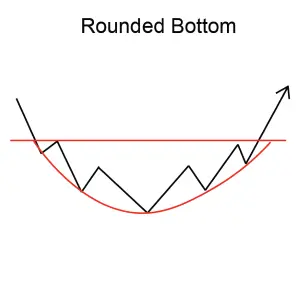
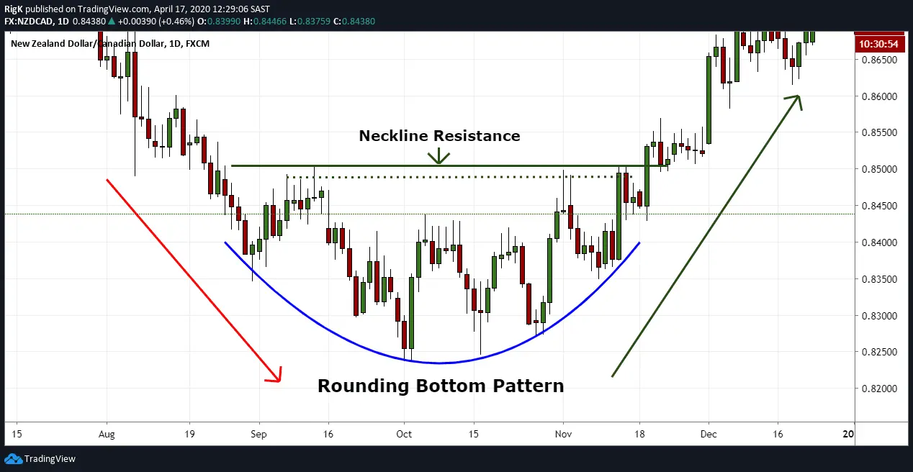

Implicaciones
Un Bajo Redondeado se considera una señal de aumento, indicando una posible reversión de la tendencia baja actual a una nueva tendencia ascendente.
Descripción
Los Bottoms redondos son alargados y en forma de U, y a veces se los conoce como giros redondeados, tazas o platos. El patrón se confirma cuando el precio se rompe por encima de su media móvil.

Características importantes
Las siguientes son características importantes a buscar en un fondo redondeado.
Forma
El patrón de precios forma una forma gradual de copa. Debería haber un fondo obvio para la copa. El precio puede fluctuar o ser lineal; sin embargo, la curva general debe ser lisa y regular, sin picos evidentes. Por ejemplo, un giro en forma de V no se consideraría un fondo redondeado.
Volumen
El volumen tiende a reflejar el patrón de precios. Por consiguiente, a medida que el fondo redondeado comienza a descender, el volumen tiende a disminuir con la disminución de la pobreza y la indecisión de los inversores. Después de un período de inactividad relativa, en el fondo de la taza, el patrón de precios comienza su giro hacia arriba. A medida que el sentimiento se vuelve más decisivo, el volumen tiende a aumentar. Cuando se mira el volumen en un patrón de fondo redondeado, Robert D. Edwards y John Magee observan que "el volumen se acelera con la tendencia [del precio] hasta que a menudo alcanza una especie de pico climático en unos pocos días de movimiento de precios casi'vertical' en el gráfico".
Duración del fondo redondeado
Los Bottoms redondos son patrones a largo plazo. Martin J. Pring identifica que el patrón puede ocurrir durante un período de aproximadamente 3 semanas, pero también puede ser observado durante varios años.
Consideraciones de negociación
Duración del patrón
La duración del patrón indica la importancia del movimiento de los precios. John J. Murphy escribe que los fondos redondos "generalmente se encuentran en gráficos semanales o mensuales que abarcan varios años. Cuanto más duren, más significativas se vuelven".
Precio objetivo
Comprensiblemente, a los inversores les gusta comprar al precio más bajo posible. Sin embargo, incluso los patrones de fondo redondeados más prometedores pueden fallar. Para determinar si una caída tiene potencial de caída, observa el precio en la parte inferior de la caída. Para un fondo redondeado, el precio tiende a oscilar y rebotar entre un límite de precio superior y inferior. Puede observar este comportamiento durante semanas o incluso años, ya que los inversores conocidos acumulan acciones al precio más bajo posible.
Clifford Pistolese aconseja que, "Si bien informados, los inversores a largo plazo están comprando dentro del rango de negociación, la eventual breakout probablemente será al revés". Para gestionar el riesgo, tanto Pistolese como Thomas N. Bulkowski sugieren que los inversores compren acciones cuando ocurre realmente la brecha.
El precio puede terminar más alto o más bajo de lo que era al comienzo de la formación. Después de una breakout inversa, los analistas técnicos pueden usar el precio inicial en el lado izquierdo de la copa para determinar dónde puede ir el precio. Sin embargo, usted va a querer supervisar el stock con interés.
Criterios que respaldan
Volumen
El volumen debe ser paralelo a la formación de precios, descendiendo a medida que el patrón alcanza el fondo, y luego aumentando a medida en que se establece la nueva tendencia ascendente.
Media móvil
Las medias móviles ayudan a determinar si el fondo redondeado tiene el potencial de una breakout al revés. Para un fondo redondeado, el precio debe cruzar la media móvil cuando empiece a subir. Cuando este crossover ocurre, el patrón es "confirmado".
Hay una abundancia de literatura sobre medias móviles si usted está interesado en entender cómo funcionan. En términos simples, la media móvil se puede utilizar para detectar un posible éxito o fracaso del patrón. Por lo general, una media móvil representa el precio de cierre de una acción durante un número especificado de días, y se puede utilizar para predecir la dirección general de la acción. Dependiendo del tipo de acción, los inversores pueden decidir utilizar una media móvil a largo, medio o corto plazo. Por ejemplo, los patrones de duración corta usualmente usan una media móvil de 50 días, y los patrón más largos usualmente un promedio móvil de 200 días.
Criterios que refuten
Forma
Una formación no es un verdadero fondo redondeado cuando no implica un período de consolidación. Consolidación ocurre después de la caída cuando el precio en la parte inferior del patrón parece rebotar entre un límite superior y inferior. Si bien existen patrones en forma de V que dan resultados exitosos, los fondos redondeados son una formación más fiable y predecible.
Comportamiento subyacente
Un fondo redondeado se forma a medida que el sentimiento de los inversionistas se desplaza gradualmente de la apatía a la agresividad. A medida que el sentimiento se vuelve hacia abajo, hay una caída en el volumen de negociación debido a la indecisión en el mercado. Hay un período de consolidación en el fondo como el comercio salta dentro de un cierto rango, y luego finalmente hay un ascenso gradual que marca el cambio a la bullishness. A medida que los inversionistas se vuelven más decididos sobre el bullishness, hay un aumento en el volumen de negociación.
